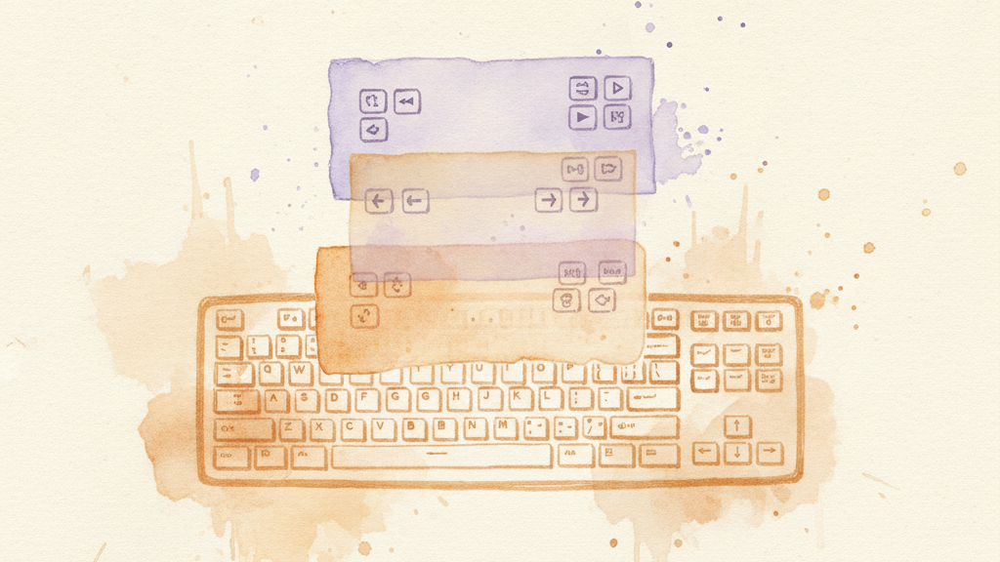

You already know that a single key can do two things — tap for one action, hold for another. Layers take that idea and apply it to your entire keyboard.
Hold a trigger key and every key on your keyboard changes what it does. Release the trigger and everything goes back to normal. It's like having multiple keyboards stacked on top of each other, and you switch between them instantly.
You've actually been using layers your whole life. Every time you hold Shift, you're on a different "layer" — one where A types a, and another where A types A. KeyPath just lets you create as many of these as you want.
If you followed the Remapping guide and have Home Row Arrows installed, you've been using a layer without thinking about it:
Base layer (normal): Home Arrows layer (hold F):
┌───┬───┬───┬───┬───┐ ┌───┬───┬───┬───┬───┐
│ Y │ U │ I │ O │ P │ │ │PgU│ ↑ │PgD│ │
├───┼───┼───┼───┼───┤ ├───┼───┼───┼───┼───┤
│ H │ J │ K │ L │ ; │ │Hom│ ← │ ↓ │ → │End│
└───┴───┴───┴───┴───┘ └───┴───┴───┴───┴───┘Hold F → you're on the arrows layer. Release F → you're back on base. That's all a layer is.
Every layer is a complete keyboard layout. When you activate a layer, KeyPath looks up what each key should do on that layer. Keys you haven't assigned on the layer fall through to the base layer — so your whole keyboard doesn't go blank, only the keys you've defined change.
┌─────────────────────────────────────────┐
│ Layer: home-arrows │
│ Only 8 keys defined — everything else │
│ falls through to base layer │
└─────────────────────────────────────────┘
▲
│ hold F
│
┌─────────────────────────────────────────┐
│ Layer: base │
│ Your normal keyboard — all keys active │
└─────────────────────────────────────────┘This means you can define a layer with just the keys you care about. Letters you don't remap still type normally.
KeyPath includes several layer packs you can install from the Pack Gallery. Each one gives you a purpose-built layer activated by a trigger key.
These activate by holding a single key on the base layer:
| Layer | Trigger | What it does |
|---|---|---|
| Home Row Arrows | Hold F | Arrow keys, Home/End, Page Up/Down on IJKL |
These use a two-step activation: hold Space (the Leader key) to enter the navigation layer, then press another key to enter a specific sub-layer. This keeps the base layer clean — Space activates one hub, and from there you branch out.
| Layer | Activation | What it does |
|---|---|---|
| Vim Navigation | Hold Space | Arrows on HJKL, copy/paste, undo, find |
| Numpad | Space + ; | Right hand becomes a number pad |
| Symbol | Space + S | Programming symbols under home row |
| Function | Space + F | F-keys on right hand, media on left |
| Window Snapping | Space + W | Tile windows to halves, corners, screens |
| Mission Control | Space + M | Expose, desktops, notification center |
The layer is immediately available. Hold the trigger keys to activate it.
See the Packs & Layers catalog for details on every available layer.
The keyboard overlay updates in real time as you switch layers. When you hold a trigger key, the overlay shows the current layer's key assignments — so you always know what each key does right now.
This is especially useful when you're learning a new layer. Keep the overlay visible and glance at it while you build muscle memory.
Most layer packs use Space as the "Leader" — the gateway to all your layers. Here's why:
Tap Space → types a space (normal)
Hold Space → navigation layer (arrows, copy, paste, undo)
Hold Space + ; → numpad layer
Hold Space + S → symbol layer
Hold Space + F → function/media layer
Hold Space + W → window snapping layer
Hold Space + M → mission control layerThis two-step design means you only "use up" one key (Space) on the base layer, but you get access to six or more layers through it.
If you'd rather use a different key as your Leader, install the Leader Key pack — you can switch to Caps Lock, Tab, or Backtick.
A key that opens the Function layer is useful only when something supplies Function-layer actions. KeyPath checks these relationships when you turn rules on, edit them, or turn them off. If a change would leave a layer key with nothing useful behind it, KeyPath identifies the affected keys and offers a safe choice.
See Make Rules Work Together for each warning and what its buttons do.
The layer packs cover the most common use cases, but you can create custom layers too.
# Create a layer
keypath layer create media
# Add keys to it
keypath rule add j --action '{"keystroke":{"key":"vold"}}' --layer media
keypath rule add k --action '{"keystroke":{"key":"volu"}}' --layer media
keypath rule add l --action '{"keystroke":{"key":"pp"}}' --layer media
# List your layers
keypath layer listThe best layers share a few traits:
You now understand the three fundamentals: remapping a key, giving one key two jobs, and switching between entire layers. Everything else in KeyPath is a specific application of these ideas.
Home Row Mods — The most popular advanced technique. Your home row keys become modifiers when held — every shortcut stays under your fingers.
Packs & Layers — Browse the full catalog of installable layer packs.
Vim Navigation — The foundation layer pack. Hold Space for arrows, editing, and more.
Keyboard Concepts — Chords, tap-dance, sequences, Hyper key — the techniques that build on top of layers.